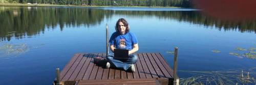

Welcome
Who is Zeth?
Hi! Welcome! My name is Zeth and I am software developer from the UK.
I always liked the term journeyman, in that I work to live and feed my family, but also that I am continually learning and trying to improve my skills and meet new people.
Though I display an outgoing and confident persona, I do admit to being a bit of a geek, I like working on different projects and often the internal old app considered too boring for a company’s internal employees will fascinate me.
As well as my continual studies in software development, I have degrees in Economics, Theology and Textual Criticism.
I was born in East Anglia where my parents still live and studied at the Universities of Essex and Birmingham. I currently live in Birmingham but also spend a month or so per year in Tampere, Finland.
Conferences
I am one of the co-founders of the UK’s Official Python Conference PyCon UK. I was Conference Vice-Chair for 7 years, Conference Chair for 2 years and in 2016 was the Lightning Talk organiser.
For my contribution to the Python community via this conference, I was made a fellow of the Python Software Foundation.
I also like to attend and speak at other conferences. My last talk was at PyCon Ireland in 2016.
Software
Most of my time is spent working on customer projects, but I also have a few projects that I work on in my own time. These are listed below.
Larger projects
- inputs (pip install inputs) - Cross-platform Python support for keyboards, mice and gamepads
- ainod - JSON Storage and Retrieval Daemon (pre-alpha)
Small Modules
- milestone (pip install milestone) - Split an XML document by milestone element
- ledgrid - (pip install ledgrid) An 8x8 grid of virtual LEDs implemented in Pygame.
- greencode - (pip install greencode) Python module implementing Green Code - a simple visual text representation that aims to be useful in LED grid based applications.
Games
- Greco (pip install greco) - a fun typing game for learning the Green Code visual language.
- Revenge of the Rogue - Campaign (set of levels) for the game Battle for Wesnoth
- MicroPet - Turn your BBC Microbit into a nice little digital pet for you to look after
- MicroPython Invaders - save the world from those evil LEDs!
- Turtle attack - introduces basic programming concepts (via the Python language) without being boring.
Blog
Blogs are pretty uncool and outdated I know, but I like to get a bit of long-form thought off my chest occasionally.
Craft
These are pages about technology and software development. Bear in mind as you read that everything in technology ages quickly of course.
Civic
These are pages about politics, society and economics. The main focus is on the UK so they will probably not be very interesting if you are not interested in local UK politics.
Legacy
My posts from 2005 to 2011 have not been converted to the modern format, and also they link internally using old http instead of https so they might not even display in your browser.